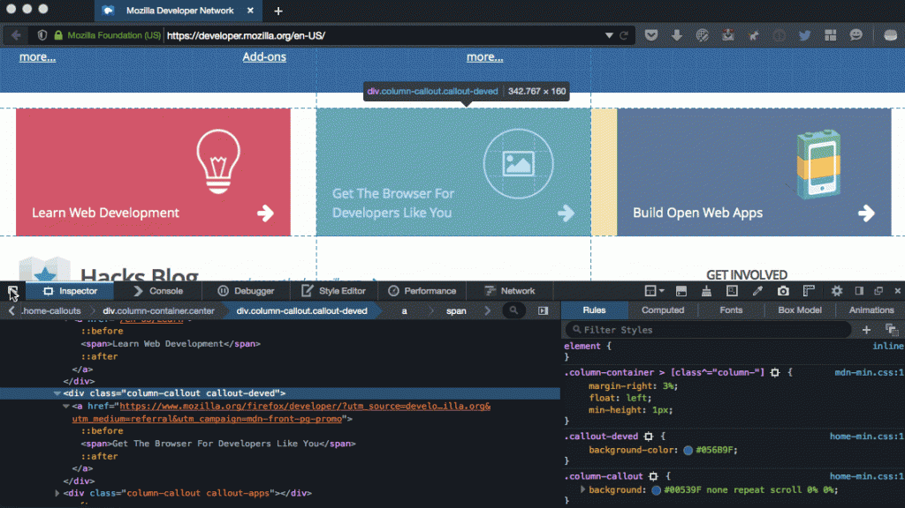
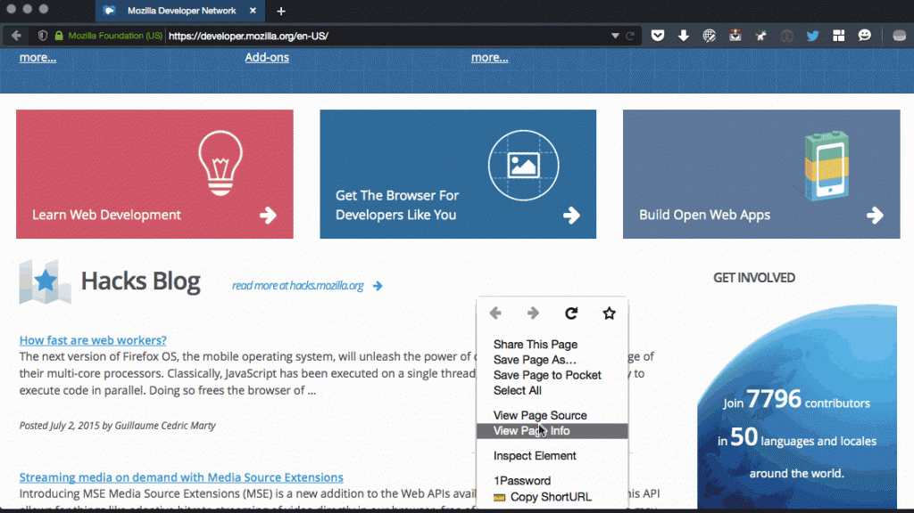
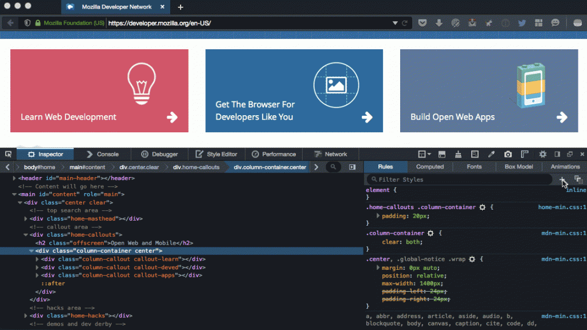
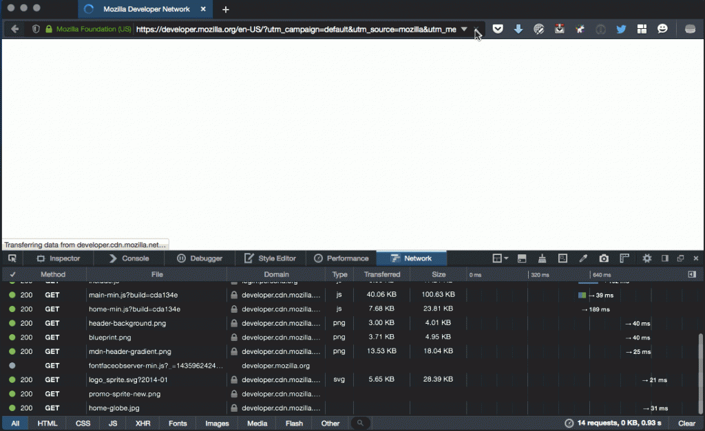

於分頁中檢視原始碼、截圖元素、HAR 檔案，還有更多
我們在幾個禮拜前剛介紹了新的「Performance」效能工具，也談到 Firefox 開發者工具團隊花了許多心力在使用者所提供的意見之上，其中包含在 UserVoice 意見反饋管道與 Bugzilla 所獲得的建議。即使 Firefox 41 版本釋出週期極為短暫，我們仍持續專注於使用者的反饋意見。社群另提出多項新功能並希望能及時加入此一版本。以下是相關簡介：
可針對檢測器 (Inspector) 中選定的節點進行截圖
新貢獻者 Léon McGregor 在 UserVoice 上提出了有趣建議。雖然之前早已能透過 Graphical Command Line Interface (GCLI) 的「screenshot」指令使用此功能，但現在將該功能加入滑鼠右鍵的選單之後，更進一步提高了使用率。而在截圖完成之後，Firefox 就會將之複製到你所設定的下載目錄中。

{kind=link}
於分頁中檢視原始碼
從 Firefox 41 開始，只要你按下滑鼠右鍵並點選「檢視原始碼 (View Page Source)」，就會在分頁中開啟 html 原始碼檢視視窗，而不會另外再開啟新的視窗。在許多人的關切之下，我們也希望能儘早推出此一功能，但這個看起來簡單的變化其實牽涉甚廣。請參閱下方 Bugzilla 的連結以了解細節。重要的是，我們確保此功能是從 Firefox 的快取獲得原始碼，而不需再重載新的版本。

{kind=link}
「新增規則」按鈕
在檢視器中工作的同時，若能直接新增規則就再方便不過。使用者透過 Firebug 提出此功能的需求已有一段時間。在此版本釋出之前，我們另外花了一點持間強化此一實作。除了在滑鼠右鍵選單加入此指令之外，也在 UI 之上提供了方便的按鈕。

{kind=link}
「Copy as HAR」與「Save all as HAR」
另有許多人透過 Firebug 所要求的功能，就是能匯出目前頁面的 HAR 備份檔案。

{kind=link}
其他重要變更
從 6 月 1 日起算，我們總共修正了 140 筆開發者工具的錯誤。除了團隊的努力之外，也要感謝提報錯誤、測試修正檔、耗時改善此 Firefox 開發者版本的所有人。特別感謝以下修正錯誤的貢獻者：edoardo.putti、fayolle-florent、15electronicmotor、veeti.paananen、sr71pav、sjakthol、ntim、MattN、lemcgregor3、indiasuny000 等人。謝謝大家！
- Bug 1164210 – $$() should return a true Array
- Bug 1077339 – Display keyboard shortcuts when hovering panel tabs
- Bug 1163183 – Show HTML5 Forms pseudo elements in the rule view
- Bug 1165576 – Netmonitor theme refresh
- Bug 1049888 – Make the storage actor work in e10s and Firefox OS
- Bug 987365 – Add pseudo-class lock options to rule view
- Bug 1059882 – Frame selection command button should be visible by default
- Bug 1143224 – Opening the netmonitor slows down requests on the page
- Bug 1119133 – Keyboard shortcut to toggle devtools docking mode between last two positions
- Bug 1024693 – Copy CSS declarations
- Bug 1050691 – Click on a function on the console should go to the debugger
立刻下載 Firefox 開發者版本 41。讓我們知道你對未來版本的想法，告訴我們應添增哪些功能。
原文連結：Developer Edition 41: View source in a tab, screenshot elements, HAR files, and more